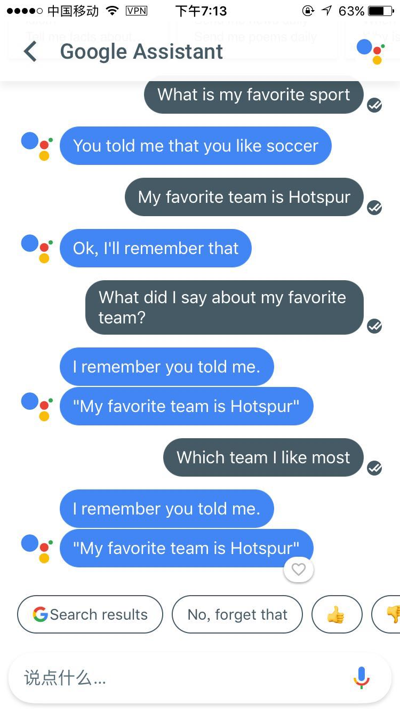
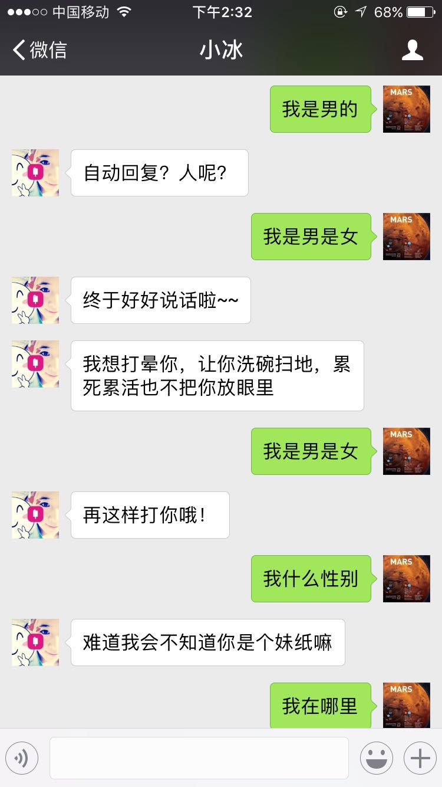
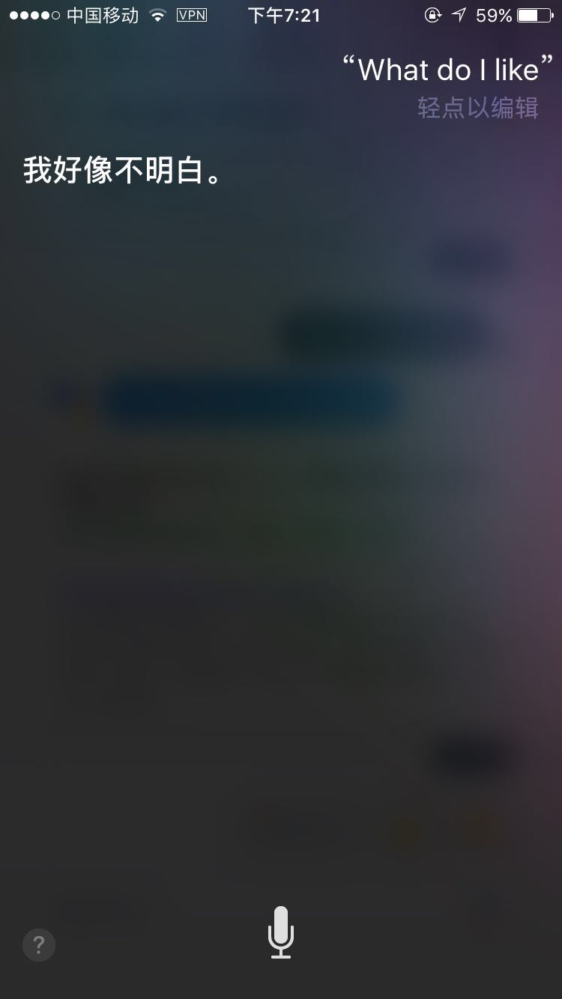
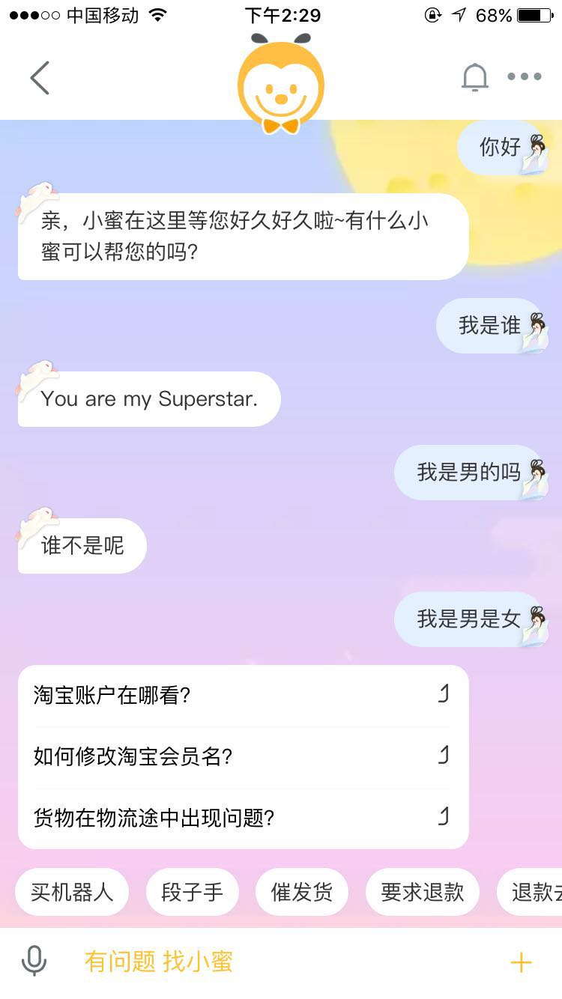
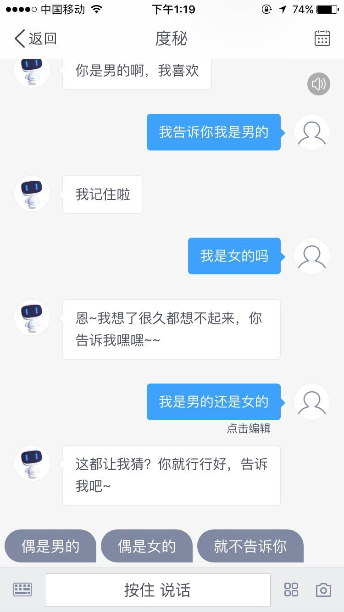
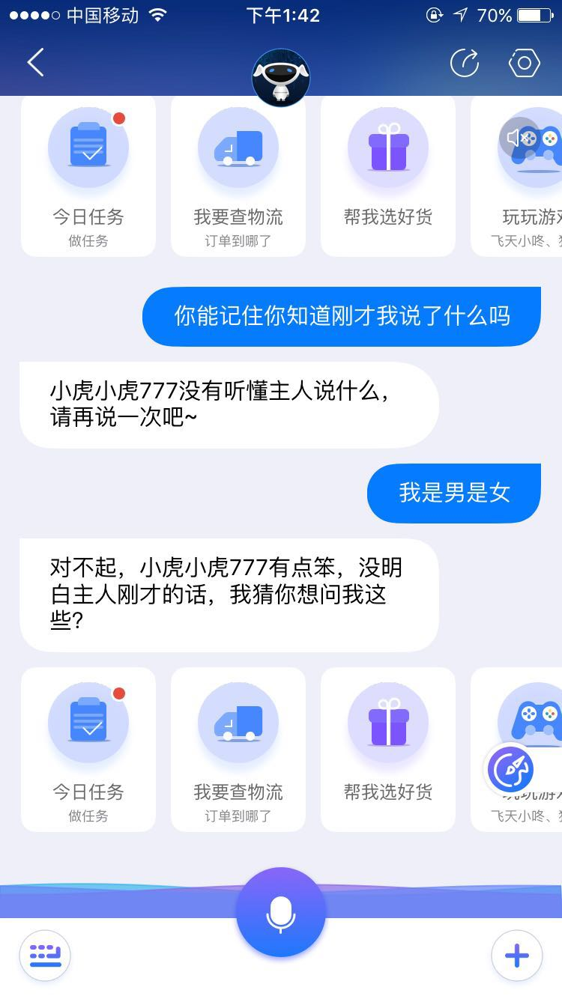

从聊天机器人现状看各大公司人工智能的布局发展
首先祝大家中秋快乐，博客公众号开了以后，访问统计看了下pv，uv少的可怜，主要原因还是内容太少，渠道也只有朋友圈传播，这次起个牛点的标题，说不定可以通过搜索增加流量，最近接触聊天机器人比较多，一直在想怎么做，能做到什么程度，能解决哪些问题，刚好国庆放假在滨江龙湖天街的奇客巴士体验了一下国内几款智能机器人的硬件产品，比较失望，于是又找了一下各大巨头的软件产品，对比了一下，记录在这里，从这里可以看到从移动互联网时代向人工智能时代巨头们的发展状况，也基本可以知道自己能做到什么地步了，最后一个感慨就是跟着google走有肉吃，google在今年5月的I/O大会宣布了从Mobile-first向AI-first的战略，自己作为个人刚好也从15年转到了backend，今年也逐渐从backend向data,ai方向进军，希望今年能做出点拿的出手的东西来，后面也会不断增加这方面的文章，废话不多说了，以下是正文：
一 国际大公司
Google:
面向消费者的手机app：Allo（Google Assistant），水平最高，有记忆功能，可以做私人助理，交互方式很好，支持文字和语音输入，而且每次都有文字提示输入，不足之处是不支持中文。  智能家居Google Home(https://madeby.google.com/home/ )，没条件体验，不过跟Allo接入的后台应该是一样的。
平台方面(https://ai.google/ )，收购DeepMind，开源TensowFlow，推出TPU（英伟达GPU有竞争对手了）,AlphaGo围棋峰会完胜人类顶级棋手（柯洁，李世乭等），看2017年的IO大会，对外宣布了Mobile-first向AI-first的战略，具体视频https://events.google.com/io/ 可以再看看
MicroSoft:
小冰，水平没谷歌强，比剩余强，没有记忆功能，支持中文，产品跟第三方整合的比较多，微信微博都接入了，微信也有小程序-小冰FM，这个小程序可以秒杀掉国内的若琪，喜马拉雅的智能机器人了 
Amazon:
echo没条件体验硬件，做智能家居最早最强的，2014年第一款上线，16年销量超650万台，https://www.amazon.com/b/?ie=UTF8&node=9818047011&ref=hud2gwalexacp&pfrdp=f5d37052-217b-4003-98c5-2c76ee403c8f&pfrd_r=FQB9ZG8YRXRQK46VDV3Y，目前出了5类等级的设备了，最便宜的50刀，看宣传视频还是很棒的，交互流畅，可以控制家里的智能家居设备，设备丰富度应该很强的，唯一担心是中文输入是否支持，以后有机会买个体验一下，网上讨论（https://www.zhihu.com/question/48036249）
Facebook:
由于翻墙地址经常变动，提示我要上传照片审核后才能登录，不过按理说fb这么牛的公司应该会机器自动审核才对的，结果2个小时过去了，还是提示（审核你的照片后，我们将尽快与你联系。出于安全考虑，你将会从 Facebook 退出），fb好感下降一大截。
Apple:
Siri挺弱智的，挺弱智的，挺弱智的，虽然支持中文语音，但是智商实在太低，让使用的用户也感觉弱智，尤其是晚上老婆喊“Hey Siri，给我打开闹钟”时每次都被我鄙视一次，但是当让siri打开指定日期都闹钟时它就歇菜了，苹果果然还是面子货（又要被果粉黑了）

OpenAI:
Musk跟Altman聚集的一帮大牛做ai方面研究的非营利组织，专业性很强，后面多关注学习下。
二 国内大公司：
阿里:
硬件方面：
17年8月刚上市天猫精灵（https://detail.tmall.com/item.htm?spm=a21m2.9157088.0.0.32896777Tnlsln&id=554918982034 ），价格499，如果没看过echo的话感觉还是挺惊艳的，但是知道了echo以后，感觉就是山寨了echo，而且晚了3年，好点的地方时中文支持多了，毕竟是国产的。
软件方面：
阿里小蜜，盒马鲜生的盒马福利社有点意思，产品有创意 
百度：
移动互联网时代落后了一大截，最近在AI上Allin，官网(http://dueros.baidu.com )看着挺丰富的，有具体产品（软硬件），合作厂商，解决方案，开放平台等等，手机端的app是度密，号称人工智能小秘书，简单体验了一番，水平一般，我告诉的问题再次提问还是记不住，哈哈，这个可以看作检验聊天机器人水平的一个小标准了，上下文短期记忆能力 
腾讯:
机器人开放平台(http://open.qq.com/bot/ )，具体产品小Q机器人2代(https://qrobot.qq.com/#/ )看视频介绍没多大新意，定位于儿童成长智能伴侣，可以忽悠下小朋友，手机app方面没找到对应应用和入口，微信也没有，有点诧异，腾讯这方面产品居然这么少，不过有个研究院（http://ai.tencent.com/ailab/index.html ），偏研究方向，看介绍有些论文。
京东:
直接面向消费者的不多，更多面向京东自身，智慧物流，自己能体验到的是京东JIMI，跟阿里小蜜类似，主要还是客服，推荐系统的功能，用之前的问题检验不出意料还是回答不上来，水平一般 
三 创业公司：
硬件方面：
若琪，喜马拉雅，公子小白，这几个智能程度都一般，没什么惊艳的地方
软件方面：
后面有空了再补充，商汤，旷世，第四范式，科大讯飞，出门问问，寒武纪等等，具体名单可看(http://www.199it.com/archives/526832.html)
如果您有更多想讨论的东西欢迎留言，也可以关注我的个人公众号(muskinfo)进行留言，后面会增加聊天机器人到上面，拭目以待吧。